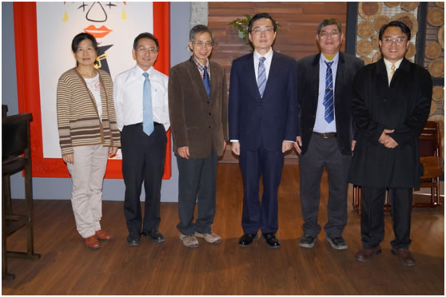
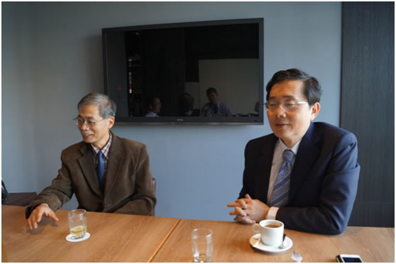
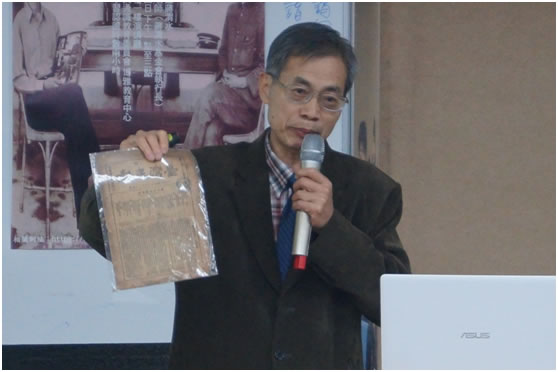
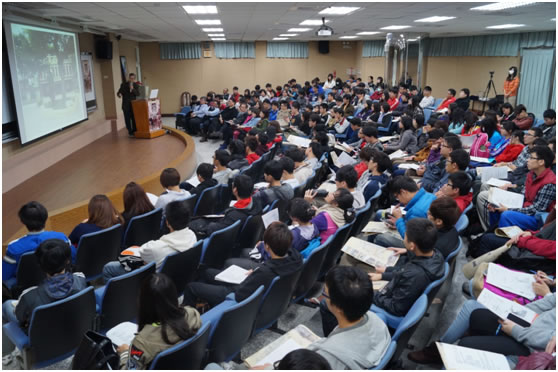
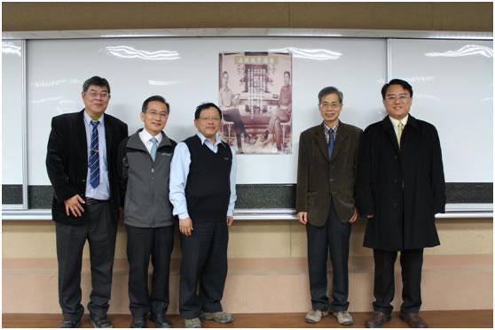
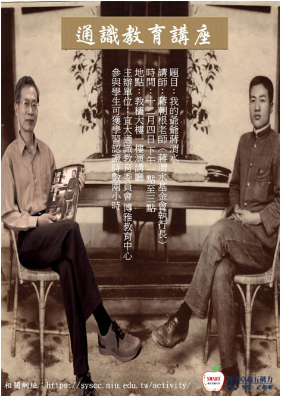

蔣渭水後人蔣朝根老師與宜蘭大學趙校長會面並蒞臨演講 |
 |
本校秘書室公共事務組 茲因宜蘭先賢蔣渭水先生的孫子，同時擔任蔣渭水基金會執行長的蔣朝根老師受邀來本校演講，12月4日中午，本校趙涵捷校長特別撥冗接見蔣朝根老師，並盛情設午宴款待，由博雅教育中心楊淳皓主任、圖書資訊館王秀娟副館長、秘書室公共事務組陳復組長與國立宜蘭特殊教育學校陳政吉老師作陪、大家暢論古往今來，相談甚歡。 趙校長在席間表示，蔣渭水先生是我們台灣的典範人物，我們都有責任讓這位宜蘭先賢回來家鄉被紀念，宜大作為宜蘭的學術重鎮，理應擔當澄清世道人心的重任，願意率風氣之先，未來在圖書資訊館設立蔣渭水專區，來展示其生平相關資料與文物，讓同學學習與認識宜蘭在地的典範人物，除邀請蔣朝根老師蒞臨圖資館探查適合的空間外，並熱烈歡迎蔣渭水基金會如有意願的話，來本校設立派駐宜蘭的辦公室。蔣朝根老師很高興與感激趙校長對蔣渭水先生如此深刻的重視，大家在摩爾先生的餐廳合影留念，留下一段佳話。 午宴結束後，蔣朝根老師來教穡大樓111演講廳演講「我的爺爺蔣渭水」，現場兩百人座無虛席，在蔣朝根老師演講前，本校通識教育委員會林世宗主委特蒞臨致詞熱烈歡迎蔣老師的到來，楊淳皓主任擔任講座主持人，陳復老師則從蔣渭水先生在宜蘭的事蹟與本校如何發展在地化課程，做簡單的引言。本校希望通過直接與歷史面對面的創新教學法，譬如來歷史現場體驗歷史，或聆聽歷史人物講歷史，來作為推廣通識教育在地化的一大亮點，蔣朝根老師來宜大細說自己祖父的往事，正符合本校這項教學卓越計畫的目標與旨趣。 來參加的本校同學多半都是選修通識相關課程的學生，大家聚精會神聆聽蔣朝根老師如何介紹蔣渭水先生這位宜蘭先賢如何可歌可泣替台灣爭取政治的平等、經濟的自由與社會的解放，蔣朝根老師會即席發問，主動舉手回答的同學，都立即獲贈蔣渭水先生紀念馬克杯，現場氣氛極其熱絡，這是場令人印象深刻的歷史饗宴，會後還有好多位同學都爭相跟蔣朝根老師合影留念。 蔣渭水，號雪谷，西元1891年生於宜蘭，九歲受業於秀才張鏡光，十六歲到公學校就讀，三年後考上台北醫學校，畢業後被派到宜蘭醫院內科服務，後轉到台北大稻埕開設大安醫院，認識當時的仕紳林獻堂，共同籌組台灣文化協會，扮演文化啟蒙者的角色，後進而展開政治社會改革，組織台灣民眾黨，向當時的台灣總督府提出各項改革主張，西元1931年因病逝世。他被視作日據時期最重要的反殖民運動領袖，宜蘭更是他工作的重點，曾在昭應宮的後殿辦讀報社，並在廟前廣場宣傳抗日與民主的思想，被世人譽為「台灣的孫中山」。 趙涵捷校長、本校同仁與蔣朝根老師合影留念 
趙涵捷校長與蔣朝根老師相談甚歡 
蔣朝根老師拿著蔣渭水辦的《台灣民報》當年珍本  現場座無虛席聆聽蔣朝根老師演講  會後本校通識教育委員會林世宗主委率同仁與蔣老師合影留念  蔣朝根老師演講：教學卓越計畫與通識教育講座海報 宜大報導相關網址：http://www.niu.edu.tw/newniu/index.php
|